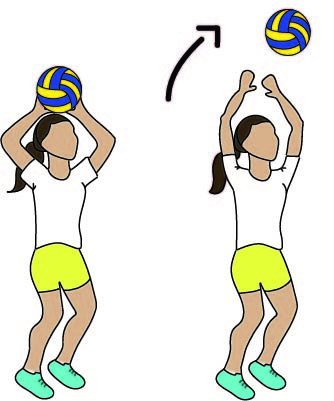
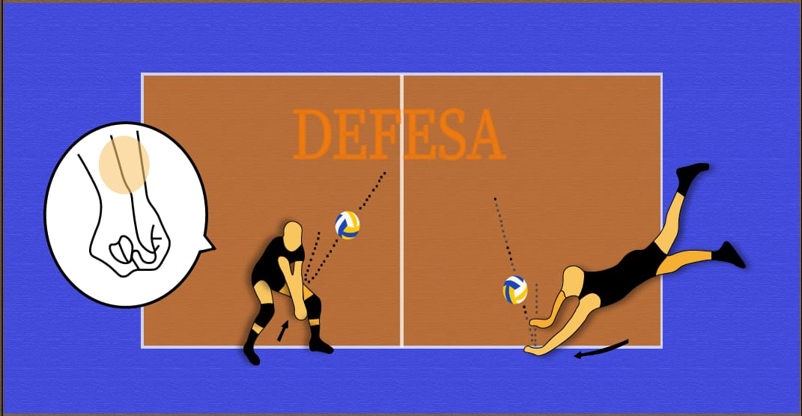

Técnicas são gestos que os jogadores utilizam para executar um determinado movimento.
No voleibol, as principais técnicas são: Saque, Recepção, Levantamento, Ataque, Bloqueio
e Defesa.
Saque
É o movimento que inicia o jogo, onde a bola é arremessada por cima da
rede e deve cair na quadra adversária. O saque é realizado no fundo da quadra e pode ser
classificado em três tipos: saque por baixo, saque lateral ou oriental e o saque por cima ou
viagem.
Saque por baixo: este saque tem como característica o jogador posicionar a bola em uma
mão e bater com a outra, de baixo para cima. Este saque é lento, sobrevoa a rede em uma
altura mais alta e também facilita o time adversário receber a bola.
Desenho de um jogador realizando o saque por baixo. (Imagem produzida por João Rocha e Luiz.)
Saque lateral ou oriental: para este saque, o jogador se posiciona lateralmente, segura a
bola com uma mão e a lança para cima, à frente do corpo e acima da altura da cabeça e
golpeia ela quando estiver próximo ao rosto. Este saque é comum por fazer a bola flutuar
em sua trajetória.
Desenho de um jogador realizando o saque oriental ou lateral. (Imagem produzida por João Rocha e Luiz.)
Saque por cima ou viagem: o saque por cima é basicamente golpear a bola ao lançar ela
para cima. Entretanto, o saque por cima é feito com os pés no chão. Já o saque viagem é
combinado com uma corrida para ganhar impulsão, um salto e um golpe potente na bola.
Desenho de um jogador realizando o saque por cima. (Imagem produzida por João Rocha e Luiz.)
Recepção
É o movimento realizado para receber a bola do time adversário e lançar
para a equipe. A recepção é um dos três toques permitidos por equipe e ele pode ser
classificado em: manchete e toque.
Manchete: a manchete é realizada com as mãos unidas e os braços um pouco separados e estendidos, para que a bola seja recepcionada no antebraço. O movimento da manchete tem início nas pernas e é realizado de baixo para cima, onde a perna seja flexionada na hora do movimento, garantindo maior precisão e comodidade no movimento.
Desenho de uma jogadora realizando a recepção manchete. (Imagem produzida por Aline e Camille.)
Toque: o toque é um recurso que permite colocar as demais técnicas do vôlei em prática. Geralmente é um recurso utilizado próximo da rede.
Desenho de um jogador realizando a recepção toque. (Imagem produzida por Aline e Camille.)
Levantamento
É caracterizado por ser o movimento de levantar a bola para que os
demais atacantes possam lançá-la para a quadra adversária. O levantamento pode ser feito
de três formas: levantamento toque, levantamento manchete e levantamento com uma mão.
Levantamento toque: é um levantamento feito a partir de uma recepção ou defesa, além disso, o levantador deve manter as costas retas e flexionar levemente os joelhos para receber e lançar a bola com as mãos em concha e os dedos polegar e indicador.

Desenho de uma jogadora realizando o levantamento toque. (Imagem produzida por Aline e Camille.)
Levantamento manchete: é um levantamento que possui como característica lançar a bola por meio de uma manchete.
Desenho de um jogador realizando o levantamento manchete. (Imagem produzida por Aline e Camille.)
Levantamento com uma mão: como o nome já diz, esse levantamento é feito somente com uma mão. É um movimento profissional.
Desenho de uma jogadora realizando o levantamento com uma mão. (Imagem produzida por Aline e Camille.)
Ataque
O ataque é o movimento de bater a bola na direção da quadra adversária
com o objetivo de marcar pontos. O ataque pode ser classificado em tipos de 3º, 2º e 1º
bola de acordo com os toques que a equipe já fez, além disso, as técnicas do ataque são:
cortada e largada.
Cortada: a cortada tem como característica força e velocidade. É notável a presença de uma corrida para ganhar impulso, um salto para ganhar altura e um golpe na bola para baixo usando o punho.
Desenho de um jogador realizando o ataque no estilo cortada. (Imagem produzida por João Rocha e Luiz.)
Bloqueio
o bloqueio é um movimento defensivo, com o objetivo de bloquear o ataque adversário, diminuir o espaço para o ataque adversário e amortecer o ataque. O bloqueio pode ser feito até três jogadores e os principais tipos de bloqueio são: bloqueio ofensivo e bloqueio defensivo.
Bloqueio ofensivo: : o bloqueio ofensivo tem como objetivo rebater a bola para a quadra adversária.
Desenho de mãos realizando o bloqueio ofensivo. (Imagem produzida por Diully e João Blan.)
Bloqueio defensivo: a característica do bloqueio defensivo é amortecer o ataque da equipe adversária e facilitar a defesa da equipe.
Desenho de um homem realizando o bloqueio defensivo. (Imagem produzida por Diully e João Blan.)
Defesa
A defesa é uma técnica usada para defender o ataque adversário, usando
técnicas como defesa com mergulho ( peixinho ) ou manchete. Além disso, o objetivo da
defesa é amortecer a bola ou fazer com que ela vá o mais para o alto possível, de forma
que outro jogador da equipe possa dar continuidade ao jogo
Defesa com mergulho (peixinho): é uma técnica usada para defender uma bola que está muito longe do corpo e muito próxima de tocar no solo, onde o jogador precisa se lançar ao chão para alcançar a bola e defender, geralmente, com apenas uma mão ou braço.
Manchete: é uma técnica usada para defender um ataque e fazer a recepção de um Saque e é feita unindo as mãos uma sobre a outra e fechando com os dedos polegares, mantendo os braços totalmente estendidos para que a bola seja rebatida com o antebraço

Desenho de um homem realizando a defesa manchete e peixinho. (Imagem produzida por Evellyn Yukie e Nicolas Gabriel.)